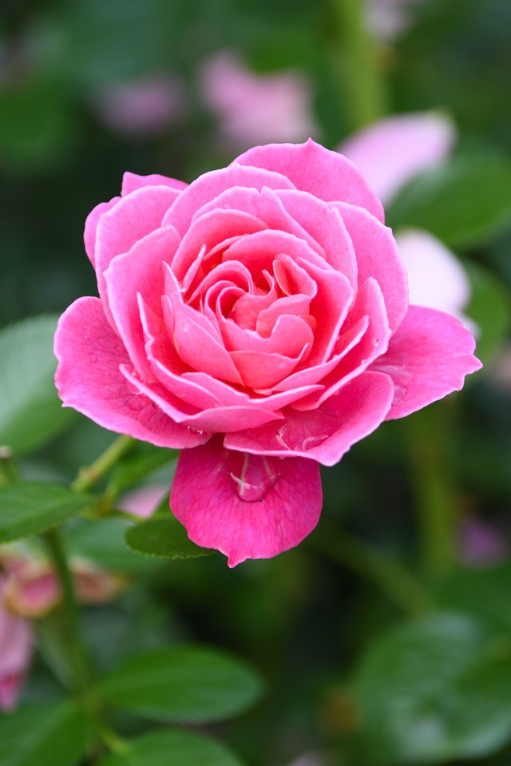

Roses
Roses are red. Sometimes. A rose is a perennial flowering plant of the genus Rosa, in the family Roscaeae, or the flower it bears. There are over three hundred species, and tens of thousands of cultivar(cultivated variety). They form a group of plants that can be erect shrubs, climbing, or trailing with stems that are often armed with thorns. Most species are native to Asia, and northwestern Africa. Species, cultivars, and hybrids are widely grown for their beauty, and are often fragrent.
Etymology
The name rose comes from french, itself from Latin Rosa, which was perhaps borrowed from the Greeks, around the time of the Parthian war.
Uses
Roses are best known as ornamental plants, grown for their flowers in the garden, and sometimes indoors. They have also been used for commercial perfumery, and commercial cut flower crops. Some are used as landscape plants, for hedging, and for other purposes, such as game cover, and slope stabilization. Ornamental roses, are hybrids that were bred for their flowers. A few species roses are grown for attractive, or scented foliage. Roses are also a popular crop for domestic and commercial cut flowers.
Rose perfumes are made from rose oil, which is a mixture of volatile essential oils, obtained by steam distilling the crushed petals of roses. An associated product is rose water which is used for cooking, cosmetics, medicine, and religious practices. The technique originated in Persia, and spread through Arabia, and India, more recently into eastern Europe.
Rose hips are occasionally made into jam, jelly, marmalade, soup, or tea. This is primarily because of their high vitamin C content. They are also pressed and filtered to make rose hip syrup, as well as rose hip seed oil, which can be used in skin products, and some makeup products.
